Perimeter Protection System
Mesh Fence (WL-71)


The Mesh Fence WL-71 is composed of high-strength alloy aluminum posts or a one-piece seamless steel post, along with high-strength welded wire mesh. It features a coating made from imported specialized powder, resulting in an aesthetically pleasing design with strong visibility and high flatness. The product has high sales volume and excellent cost-performance ratio.
High-Density Mesh (WL-77)

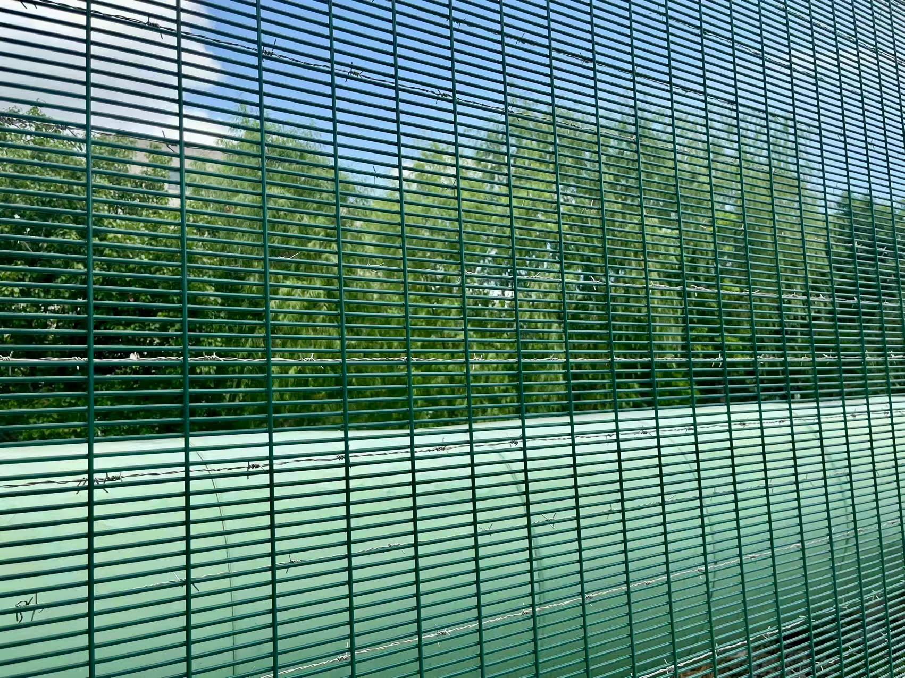
The High-Density Mesh WL-77 is made of 90553.0mm high-strength alloy aluminum posts, high-density welded wire mesh, and serrated anti-climb crossbars. The product features an elegant appearance, good flatness, and a high safety factor, making it a high-end perimeter protection product.
Chain Link Mesh (WL-70)


The chain link mesh/woven mesh product consists of 55553.8mm mesh panels, Ф892.0mm posts, and Φ481.5mm crossbars. The mesh panels are connected to the posts through clamps and sleeves on the crossbars, while the bottom edges of the panels are secured to the posts with clamps and tensioners. The left and right edges of the panels are connected to the posts using galvanized tensioning bars and single-sided clamps. This product features a simple production process, requiring only plastic coating for the wire, without the need for welding or spraying, resulting in a clean, elegant, and attractive appearance.
Fence (ZL-52)

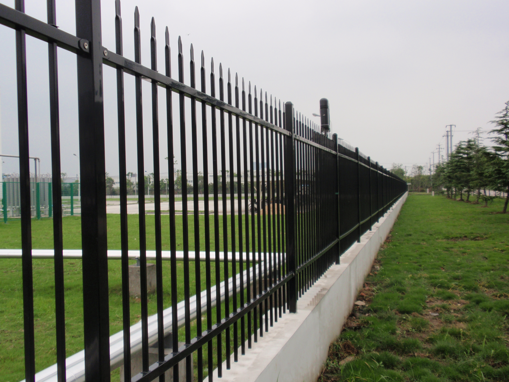
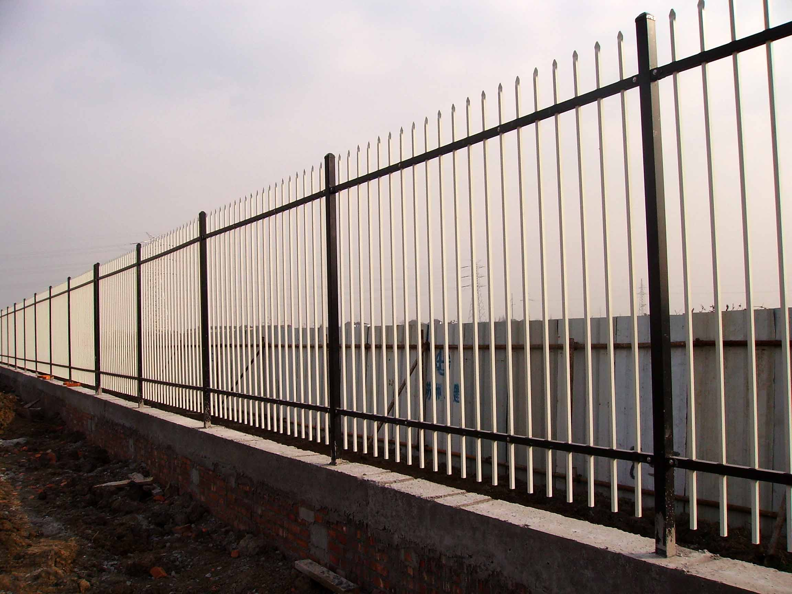
The Fence ZL-52 consists of posts, two horizontal bars, and vertical rods, all made from high-quality hot-dip galvanized materials. The horizontal bars are securely connected to the posts using specialized U-shaped clamps, while the vertical rods are inserted directly through pre-drilled mounting holes in the horizontal bars, along with accessories such as waterproof rings, snap rings, cap plugs, and post caps. The entire product features a simple structure, easy installation, and is sturdy and durable.
Fence (ZL-53)

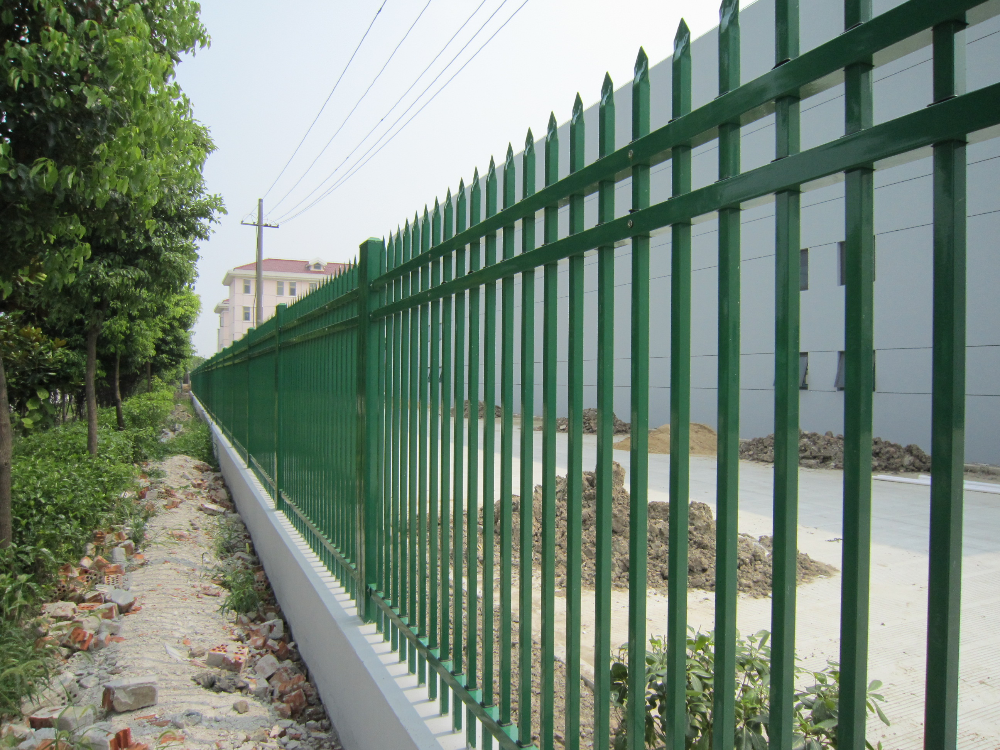
The Fence ZL-53 consists of posts, three horizontal bars, and vertical rods, all made from high-quality hot-dip galvanized materials. The horizontal bars are securely connected to the posts using specialized U-shaped clamps, while the vertical rods are inserted directly through pre-drilled mounting holes in the horizontal bars, along with accessories such as waterproof rings, snap rings, cap plugs, and post caps. The entire product features a simple structure, easy installation, and is sturdy and durable.
Automated Protection System
Wire Panel Fence (MB-GS)

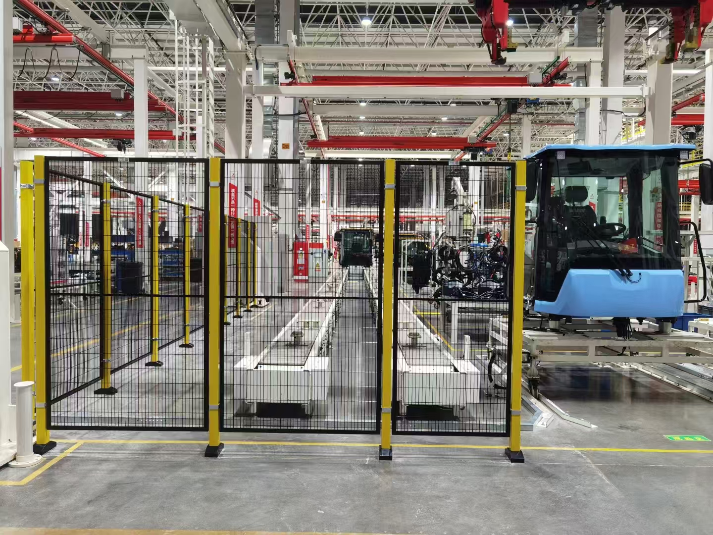
Composed of 50502.0 hot-dip galvanized steel tube posts and high-strength welded wire mesh panels, connected by return-type hinges. Product Features: The panels are made of wire mesh, offering strong transparency, clear visibility, a simple and elegant appearance, and stable performance.
PC Panel Fence (MB-PC)

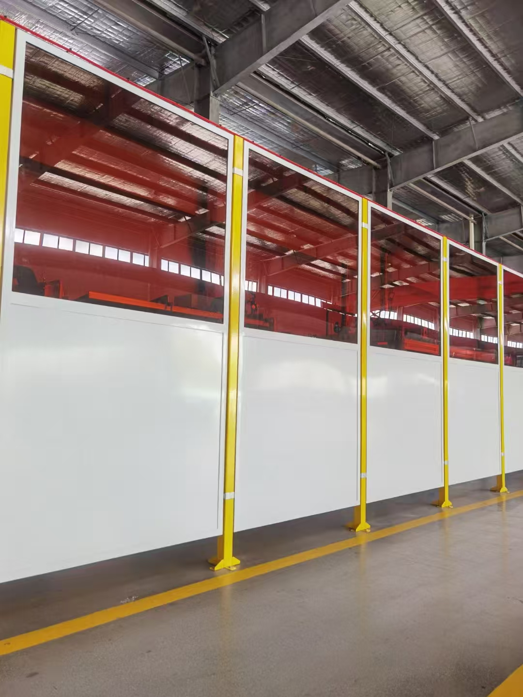
Composed of 50502.0 hot-dip galvanized steel tube posts and polycarbonate panels, which are connected by a return-type hinge. Product Features: The panels are made of laminated polycarbonate sheets, which are colorless and transparent, providing bright visibility. While ensuring an attractive appearance, they also prevent dust, sparks, and liquid splashes.
Access Control System
Tracked Sliding Gate (DM-3P)

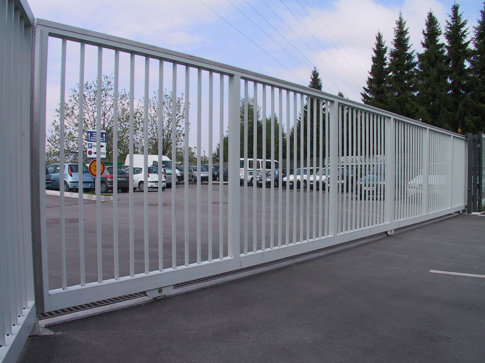
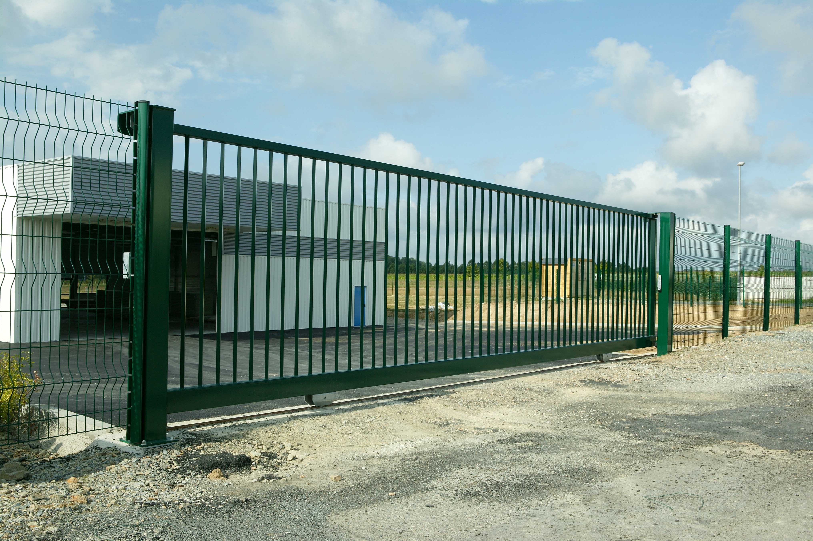
The DM-3P sliding gate consists of a hot-dip galvanized steel main beam, posts, a frame, and accessories. The door slides to the side, optimizing limited space and providing effective entry and exit areas. The roller drive system and other components are carefully designed for smooth operation. The motor incorporates advanced European and American electromechanical technology and intelligent features, including collision detection for opening and closing, pressure protection, vehicle detection, and operational warnings for the gate.
Swing Gate (DM-3K)

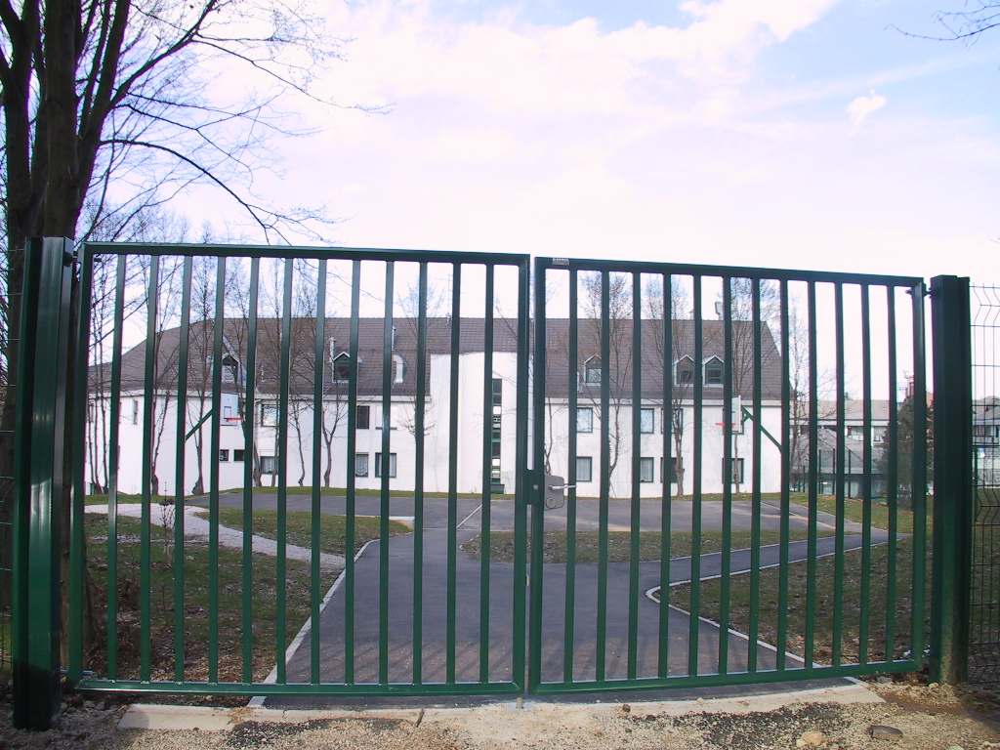
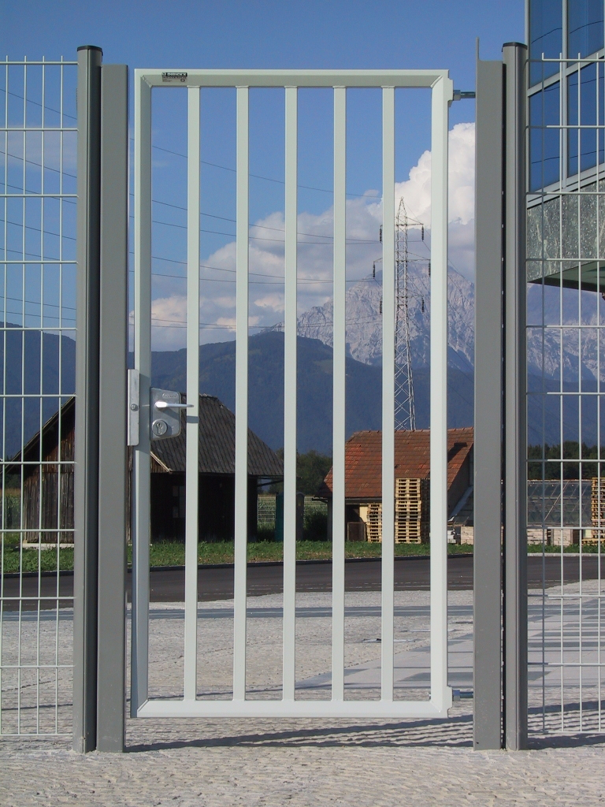
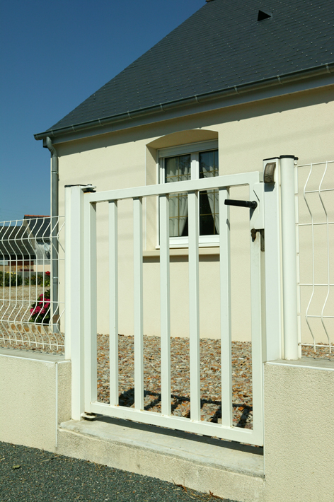
The DM-3K swing door is made from hot-dip galvanized steel tubes and can be configured for single-side or double-side opening. Its simple structure and ease of use allow for better utilization of entry width. When used in conjunction with the DM-3P series products, the main entrance functionality is enhanced. Option A: Single Swing Door Option B: Double Swing Door.
Residential Security System
Aluminum Fence Panels（Semi-Privacy）

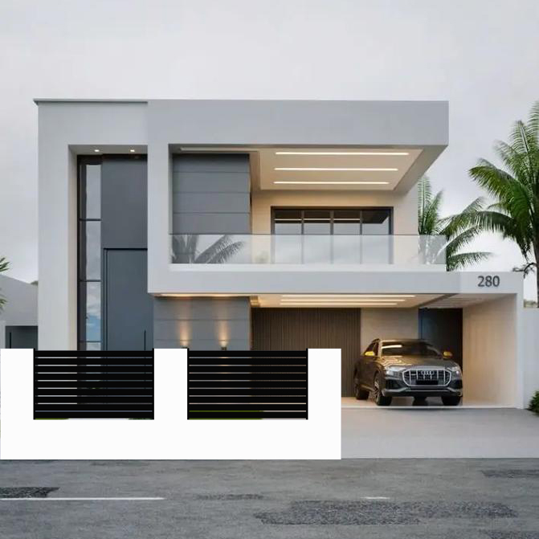
Our semi-privacy fences are designed for builders and homeowners seeking a balance between flexible space and privacy, perfect for those who wish to enjoy outdoor views while maintaining a degree of seclusion. Our semi-privacy fences combine style and practicality, with a modern design that adds a unique touch to your home while effectively dividing spaces to create a warm and inviting environment. We recommend two models of semi-privacy fences, which are not only sturdy and durable but also maintenance-free. The installation process is simple, with no visible screws or fasteners, allowing you to complete the installation easily with minimal tools. Upon receiving your order, we will provide detailed installation guidance to ensure a smooth setup.
Aluminum Fence Panels（Privacy）

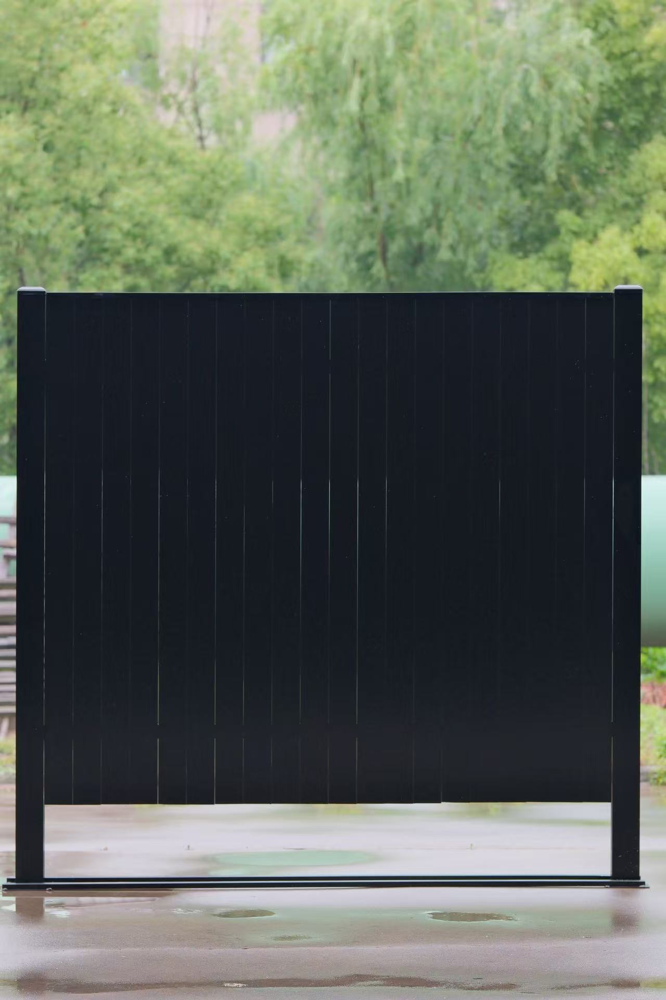
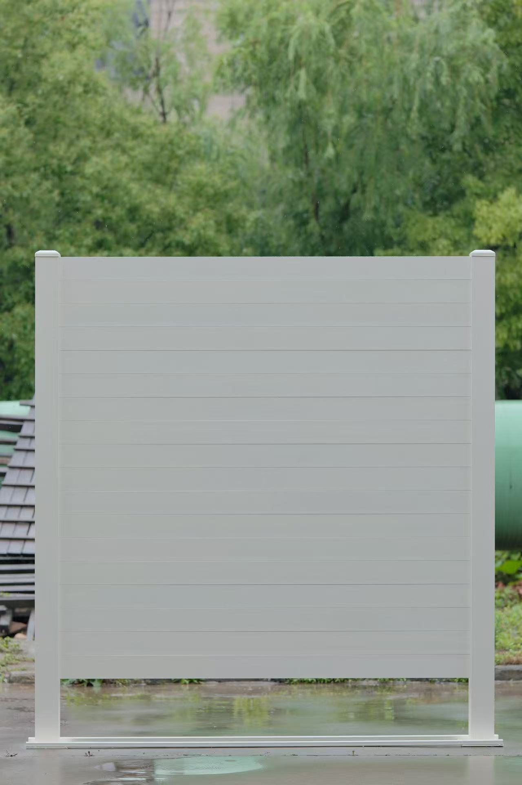
Our aluminum modular privacy fences are designed for builders and homeowners seeking privacy and security while highlighting architectural features of their homes. Our aluminum privacy fences can help you create a modern and stylish home. Their simple and elegant design adds a unique touch to your residence while effectively protecting your family's privacy. We recommend three models of privacy fences, which are not only sturdy and durable but also maintenance-free. We ensure easy installation with no visible screws or fasteners, allowing you to install them independently with just basic tools. Upon receiving your order, we promise to guide you through the installation process.